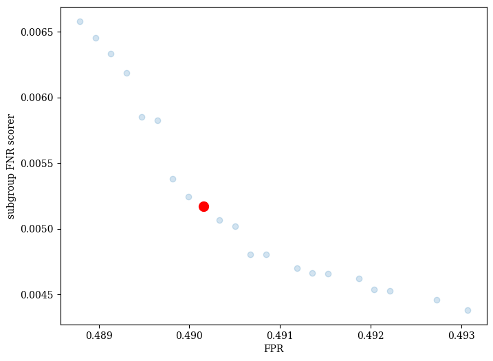
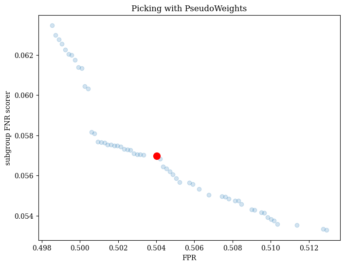
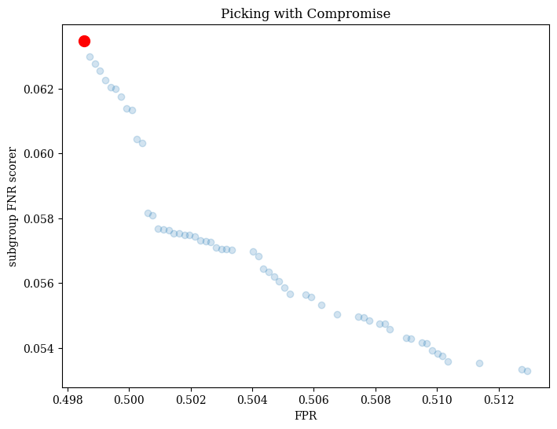
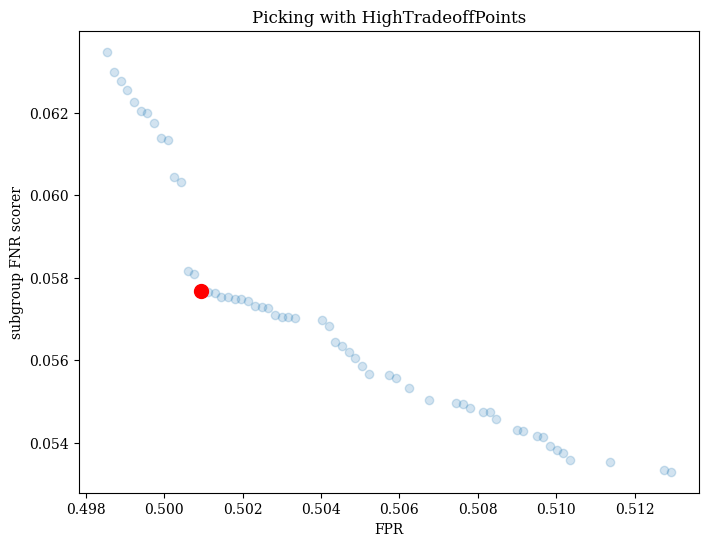

Fair Classification on Adult Dataset#
[1]:
import copy
import pytest
import pandas as pd
import matplotlib.pyplot as plt
%matplotlib inline
from fomo import FomoClassifier
from sklearn.preprocessing import StandardScaler
from sklearn.linear_model import LogisticRegression
from sklearn.model_selection import train_test_split
from sklearn.pipeline import Pipeline
from sklearn.metrics import roc_auc_score, average_precision_score
from pmlb import pmlb
import fomo.metrics as metrics
from pymoo.algorithms.moo.nsga2 import NSGA2
from pymoo.algorithms.moo.nsga3 import NSGA3
from pymoo.util.ref_dirs import get_reference_directions
dataset = pmlb.fetch_data('adult')
# dataset = dataset.sample(n=2000)
X = dataset.drop('target',axis=1)
y = dataset['target']
Xtrain,Xtest, ytrain,ytest = train_test_split(X,y,
stratify=y,
random_state=42,
test_size=0.5
)
ss = StandardScaler()
Xtrain = pd.DataFrame(ss.fit_transform(Xtrain), columns=Xtrain.columns, index=ytrain.index)
Xtest = pd.DataFrame(ss.transform(Xtest), columns=Xtest.columns, index=ytest.index)
groups = ['race','sex']
[2]:
from sklearn.metrics import make_scorer, accuracy_score
from fomo.problem import MLPProblem
est = FomoClassifier(
estimator = LogisticRegression(),
accuracy_metrics=[make_scorer(metrics.FPR)],
fairness_metrics=[metrics.subgroup_FNR_scorer],
verbose=True,
problem_type=MLPProblem
)
est.fit(Xtrain,ytrain,protected_features=groups, termination=('n_gen',100))
running 8 processes
groups ['race', 'sex']
number of variables: 41
number of objectives: 2
==========================================================
n_gen | n_eval | n_nds | eps | indicator
==========================================================
1 | 100 | 9 | - | -
2 | 200 | 12 | 0.0086206897 | nadir
3 | 300 | 16 | 0.0430379747 | ideal
4 | 400 | 17 | 0.0100250627 | ideal
5 | 500 | 19 | 0.0252685288 | f
6 | 600 | 23 | 0.0148486699 | f
7 | 700 | 26 | 0.0362318841 | ideal
8 | 800 | 31 | 0.0742437499 | ideal
9 | 900 | 27 | 0.0029670378 | ideal
10 | 1000 | 28 | 0.0083725444 | nadir
11 | 1100 | 29 | 0.0054596395 | f
12 | 1200 | 27 | 0.0115790712 | f
13 | 1300 | 12 | 0.0061137237 | ideal
14 | 1400 | 12 | 0.0256059324 | ideal
15 | 1500 | 13 | 0.0141601592 | f
16 | 1600 | 9 | 0.0672846903 | ideal
17 | 1700 | 9 | 0.0044052863 | ideal
18 | 1800 | 9 | 0.2017692557 | ideal
19 | 1900 | 9 | 0.0320573933 | ideal
20 | 2000 | 16 | 0.1071281050 | ideal
21 | 2100 | 19 | 0.0345289621 | f
22 | 2200 | 19 | 0.0344827586 | ideal
23 | 2300 | 17 | 0.0267576688 | f
24 | 2400 | 19 | 0.1830985915 | ideal
25 | 2500 | 20 | 0.0076162522 | ideal
26 | 2600 | 23 | 0.0270270270 | ideal
27 | 2700 | 26 | 0.0208982020 | f
28 | 2800 | 30 | 0.0170305719 | f
29 | 2900 | 31 | 0.0099164611 | f
30 | 3000 | 32 | 0.0263157895 | ideal
31 | 3100 | 27 | 0.0085905751 | f
32 | 3200 | 29 | 0.0617283951 | ideal
33 | 3300 | 33 | 0.0879244139 | nadir
34 | 3400 | 33 | 0.0039944699 | f
35 | 3500 | 33 | 0.0031085730 | ideal
36 | 3600 | 36 | 0.0065496687 | ideal
37 | 3700 | 36 | 0.0125000000 | ideal
38 | 3800 | 42 | 0.0044677143 | ideal
39 | 3900 | 41 | 0.0716785359 | nadir
40 | 4000 | 44 | 0.0212510840 | ideal
41 | 4100 | 43 | 0.0004242495 | f
42 | 4200 | 39 | 0.0024689286 | f
43 | 4300 | 37 | 0.0050608934 | f
44 | 4400 | 35 | 0.0046444144 | f
45 | 4500 | 34 | 0.0051185824 | f
46 | 4600 | 36 | 0.0088972251 | nadir
47 | 4700 | 36 | 0.0036045448 | f
48 | 4800 | 37 | 0.0120481928 | ideal
49 | 4900 | 36 | 0.0035801984 | f
50 | 5000 | 38 | 0.0006778112 | f
51 | 5100 | 37 | 0.0025753737 | f
52 | 5200 | 38 | 0.0017202883 | f
53 | 5300 | 39 | 0.0032968550 | f
54 | 5400 | 41 | 0.0013967411 | f
55 | 5500 | 37 | 0.0032081457 | f
56 | 5600 | 38 | 0.0020839350 | f
57 | 5700 | 38 | 0.0023075155 | f
58 | 5800 | 38 | 0.0031900769 | f
59 | 5900 | 38 | 0.0017869446 | f
60 | 6000 | 37 | 0.0031224872 | f
61 | 6100 | 39 | 0.0008418260 | f
62 | 6200 | 40 | 0.0018764649 | f
63 | 6300 | 43 | 0.0044249899 | f
64 | 6400 | 44 | 0.0013363433 | f
65 | 6500 | 46 | 0.0119047619 | ideal
66 | 6600 | 49 | 0.0018140707 | f
67 | 6700 | 51 | 0.0028630187 | f
68 | 6800 | 50 | 0.0006250951 | f
69 | 6900 | 51 | 0.0017292317 | f
70 | 7000 | 51 | 0.0117647059 | ideal
71 | 7100 | 52 | 0.0026202418 | ideal
72 | 7200 | 53 | 0.0007716678 | f
73 | 7300 | 52 | 0.0010127901 | f
74 | 7400 | 52 | 0.0016901939 | f
75 | 7500 | 52 | 0.0020396039 | f
76 | 7600 | 51 | 0.0032111054 | f
77 | 7700 | 55 | 0.0011600015 | f
78 | 7800 | 55 | 0.0012534057 | f
79 | 7900 | 54 | 0.0055950243 | ideal
80 | 8000 | 54 | 0.0004396763 | f
81 | 8100 | 51 | 0.0009126921 | f
82 | 8200 | 51 | 0.0016033684 | f
83 | 8300 | 51 | 0.0018087677 | f
84 | 8400 | 51 | 0.0021397974 | f
85 | 8500 | 51 | 0.0024947540 | f
86 | 8600 | 51 | 0.0026282147 | f
87 | 8700 | 53 | 0.0029600432 | ideal
88 | 8800 | 53 | 0.0001841545 | f
89 | 8900 | 54 | 0.0004520615 | f
90 | 9000 | 55 | 0.0007531997 | f
91 | 9100 | 53 | 0.0017709106 | f
92 | 9200 | 54 | 0.0019597996 | f
93 | 9300 | 53 | 0.0025166488 | f
94 | 9400 | 53 | 0.0002122683 | f
95 | 9500 | 53 | 0.0006212178 | f
96 | 9600 | 53 | 0.0008674702 | f
97 | 9700 | 55 | 0.0024911073 | f
98 | 9800 | 55 | 0.0025786398 | f
99 | 9900 | 55 | 0.0001041267 | f
100 | 10000 | 58 | 0.0010693803 | f
[2]:
FomoClassifier(accuracy_metrics=[make_scorer(FPR)],
estimator=LogisticRegression(n_jobs=1),
fairness_metrics=[<function subgroup_FNR_scorer at 0x7fac27cc1440>],
problem_type=<class 'fomo.problem.MLPProblem'>, verbose=True)In a Jupyter environment, please rerun this cell to show the HTML representation or trust the notebook. On GitHub, the HTML representation is unable to render, please try loading this page with nbviewer.org.
FomoClassifier(accuracy_metrics=[make_scorer(FPR)],
estimator=LogisticRegression(n_jobs=1),
fairness_metrics=[<function subgroup_FNR_scorer at 0x7fac27cc1440>],
problem_type=<class 'fomo.problem.MLPProblem'>, verbose=True)LogisticRegression(n_jobs=1)
LogisticRegression(n_jobs=1)
visualize model set#
est.plot() will return the Pareto front found during the run, with a red dot indicating the final chosen model. By default, Fomo uses the PseudoWeights method from pymoo to choose the final model, which produces a model near the centroid of the front.
[3]:
est.plot().show()
[3]:
<pymoo.visualization.scatter.Scatter at 0x7fac9733fd50>

picking with different strategies#
We can also pick with other multi-criteria decision making strategies (MDCMs). Fomo supports the PseudoWeights, Compromise, and HighTradeoffPoints strategies from pymoo.
Here’s an example of picking with the Compromise strategy.
[4]:
est.best_estimator_ = est.pick_best('PseudoWeights')
plot = est.plot()
plot.show()
plt.title('Picking with PseudoWeights')
[4]:
Text(0.5, 1.0, 'Picking with PseudoWeights')

[5]:
est.best_estimator_ = est.pick_best('Compromise')
plot2 = est.plot()
plot2.show()
plt.title('Picking with Compromise')
[5]:
Text(0.5, 1.0, 'Picking with Compromise')

Here’s an example of picking with the HighTradeoffPoints strategy.
[6]:
est.best_estimator_ = est.pick_best('HighTradeoffPoints')
plot3 = est.plot()
plot3.show()
plt.title('Picking with HighTradeoffPoints')
[6]:
Text(0.5, 1.0, 'Picking with HighTradeoffPoints')
